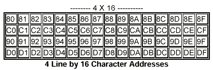

LCDALPHA.DLL can be used to simulate most commonly available alphanumeric LCD modules based around the HD44780 controller chip. The model is set up to allow for an arbitrary mapping of LCD character positions to controller chip addresses, and displays with one or two controller chips are catered for.
A number of common display types from Densitron are pre-defined in DISPLAYS.LIB.
Details on how to program the controller chip can be found in the HD44780 Datasheet.
The ISIS library part should be created with two active symbols representing the on and off states of the display backlight. The origin should be in the centre of the symbols; their area defines where the display output will appear.
The model should have pin names corresponding to the pins of the HD44780 controller - the easiest thing to do when making a new display is to decompose one of the existing ones.
If the display has two controller chips, label the enable pins E1 and E2 as opposed to E.
The LCDALPHA model supports the following properties
| Property | Default | Description |
NUMCOLS |
- |
Specifies the display width in characters. |
NUMROWS |
- |
Specifies the display height in characters. |
CLOCK |
250kHz |
Specifies the clock frequency of the controller chip. This determines the time taken to process the various commands, and also the blink rate of the cursor. |
ROWn |
- |
Specifies the address map for the n'th row. |
The mapping between address locations within the controller chip memory and physical locations on the display itself varies between different LCD modules. To cater for this, LCDALPHA.DLL allows you to specify the mapping for each row of the display.
For example, the mapping for a typical 4x16 display is shown below:

To correctly model this with LCDALPHA.DLL, you would need to add the following properties to the ISIS library part:
ROW1=80-8F
ROW2=C0-CF
ROW3=90-9F
ROW4=D0-DF
If a row contains a non-contiguous run of address, you can add multiple address ranges on one line, as in
ROW1=80-8F C0-CF
The controller model contains internal debug or trace information which can be enabled manually from the Debug menu in ISIS. When enabled internal trace data for the model will be dumped in the simulation log during a simulation run.
Bear in mind that enabling trace mode may send a great deal of data to the simulation log, and seriously degrade the performance of the simulator.